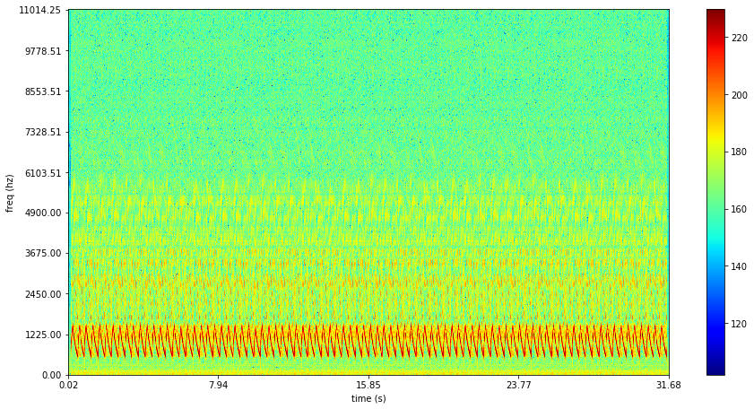

List of Audio Libraries and References
The following list of C / C++ libraries and references for audio processing is provided for your convenience only.
You are not required to use any of these libraries / references for this homework.
-
Keep It Simple, Stupid FFT library.
-
Audacity. Useful for analyzing raw audio (waves) and modifying audio files (ie. stereo <--> mono).
Part 1a: Slow DFT
Implement the Discrete Fourier Transform (DFT) in C, C++, MATLAB, Java, or Python. Implement the slow version that multiplies the transform matrix by the input vector in O(N2) time. Your code should support input vectors of size up to 1024.
Part 1b: Slow IDFT
Implement the Inverse Discrete Fourier Transform (IDFT) in C, C++, MATLAB, Java, or Python. Implement the slow version that multiplies the transform matrix by the input vector in O(N2) time. Your code should support input vectors of size up to 1024.
Part 2a: FFT
Implement the Fast Fourier Transform (FFT) in C, C++, MATLAB, Java, or Python. Implement the fast version that uses recursion and runs in O(n log2 n) time. Note that you are not allowed to use MATLAB's implementation nor any other existing library for this problem. Your code should support input vectors of size up to 1024. Use your code from Part 1a to cross-check your implementation.
Part 2b: IFFT
Implement the Inverse Fast Fourier Transform (IFFT) in C, C++, MATLAB, Java, or Python. Implement the fast version that uses recursion and runs in O(n log2 n) time. Note that you are not allowed to use MATLAB's implementation nor any other existing library for this problem. Your code should support input vectors of size up to 1024. Use your code from Part 1b to cross-check your implementation.
Part 3a: FFT check
Using your implementation from Part 2a, compute the Discrete Fourier Transform of the following vector:
[0, 0.7071, 1, 0.7071, 0, -0.7071, -1, -0.7071]
Note: you may want to use sqrt(2)/2 instead of 0.7071.
[ 0.00000000e+00+0.00000000e+00j, 1.22464680e-16-3.99998082e+00j,
0.00000000e+00+0.00000000e+00j, 9.95799250e-17+1.91800920e-05j,
0.00000000e+00+0.00000000e+00j, 1.22464680e-16-1.91800920e-05j,
0.00000000e+00+0.00000000e+00j, -3.44509285e-16+3.99998082e+00j]
Compare your output with the output generated by MATLAB's fft() method for the same vector 'x'. Include the result below, and any discrepancies. You may also use one of the FFT libraries above, if you choose.
-> Now lets check if our FFT function is element wise equal (within tolerance) to Numpy's FFT
np.allclose(array(fft(a)), np.fft.fft(a))
True
-> Now lets see what is the difference between our FFT output and Numpy's FFT
array(fft(a)) - np.fft.fft(a)
array([ 0.00000000e+00+0.00000000e+00j, 1.22464680e-16+0.00000000e+00j,
0.00000000e+00+0.00000000e+00j, 9.95799250e-17+2.22044605e-16j,
0.00000000e+00+0.00000000e+00j, 1.22464680e-16+0.00000000e+00j,
0.00000000e+00+0.00000000e+00j, -3.44509285e-16+0.00000000e+00j])
-> Hurray!!! , The both outputs are equal (almost, difference is in around 10^-17)
Part 3b: IFFT check
Using your implementation from Part 2b, compute the inverse Discrete Fourier Transform of the following vector:
[0, -4i, 0, 0, 0, 0, 0, 4i]
array([ 0. +0.00000000e+00j, 0.70710678+0.00000000e+00j,
1. -6.12323400e-17j, 0.70710678-1.11022302e-16j,
0. +0.00000000e+00j, -0.70710678+0.00000000e+00j,
-1. +6.12323400e-17j, -0.70710678+1.11022302e-16j])
Compare your output with the output generated by MATLAB's ifft() method for the same vector 'X'. Include the result below, and any discrepancies. You may also use one of the IFFT libraries above, if you choose.
-> Here we are comparing our result with Numpy's ifft
np.allclose(ifft_output, np.fft.ifft(a))
True
Yes, As we can see that two results are element-wise equal within a tolerance.
-> Now lets see what is the difference between our IFFT output and Numpy's IFFT
ifft_output - np.fft.ifft(a)
array([ 0.00000000e+00+0.00000000e+00j, 0.00000000e+00+0.00000000e+00j,
0.00000000e+00-6.12323400e-17j, -1.11022302e-16-1.11022302e-16j,
0.00000000e+00+0.00000000e+00j, 0.00000000e+00+0.00000000e+00j,
0.00000000e+00+6.12323400e-17j, 1.11022302e-16+1.11022302e-16j])
Hurray!!! , The both outputs are equal (almost, difference is in around 10^-17)
Part 4
Using any FFT and IFFT implementation, compute and plot the spectrograms for the following 3 audio files. In case you are curious, those audio snippets came from the game that was used in HW3.
| Audio Data | Spectrogram |
|---|---|
Part 5
Repeat what you did in part 4, but now process three audio files that you recorded while playing your favorite game. Describe how you recorded the audio and what parameters were used (e.g., sampling frequency, duration). Also, describe the parameters that you used to compute the spectrograms (you can put this in the comments for your code). Modify the HTML template so that you files are linked and your spectrograms are show to the right of each audio file.
| Audio Data | Spectrogram |
|---|---|
|  | |
Police Siren recording by Vlammenos, from soundbible.com/581-Police-Siren-3.html
Violin recording by FreqMan, from freesound.org/people/FreqMan/sounds/25481/
Orca recording from nps.gov/glba/naturescience/soundclips.htm
Part 6
Synthesize the dial tones for three different area codes (only 3 digits). Save these as audio files and link to them in the HTML template. Then plot the spectrograms for each audio file.
| Audio Data | Spectrogram |
|---|---|
First Code is 173
Second Code is 519
Third Code is 920
Part 7: Find Published FFT and IFFT Algorithms
Find at least 5 instances of published FFT algorithms AND at least 5 instances of published IFFT algorithms. For this to count, your source must be a published book. Also, for each instance, you must find either a complete algorithm in pseudo code or a complete source code (in any language). Math only descriptions don't count.
For each instance, submit a picture or a scanned copy of the page(s) with the algorithm, the page of the book that contains the title and the author name(s), and the page that contains the edition and the book's ISBN number.
Warning: to solve this part you may need to visit to the library!
Insert links to your images here.
Extra Credit
Part EC1: Corrections to Published Algorithms
While collecting sources for part 7, if you find any published algorithms that contain errors, please correct the errors (but don't write them in the book) and submit the corrections. You get 1% extra credit for each error that you find. The submission instructions are the same as in part 7, but write the corrections in red on the scanned page.
Insert links to your images here.
Part EC2: Non-Recursive FFT
Implement a non-recursive version of the Fast Fourier Transform (FFT) in C, C++, MATLAB, Java, or Python. This is the iterative version of the algorithm that still runs in O(N log2N) time, but does not use recursion. Your code should support input vectors of size up to 1024. Once again, this must be your own implementation. Run you code on the vector from part 3a and report the result.
array([523.03315668+0.j , 4.69304583-0.74800533j, 5.73716514+5.57015994j, ..., 0.71648219-1.89630633j, 5.73716514-5.57015994j, 4.69304583+0.74800533j])